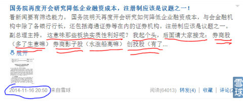
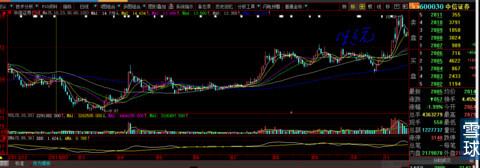
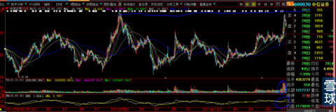
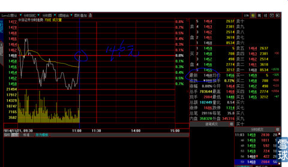
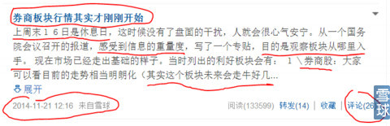
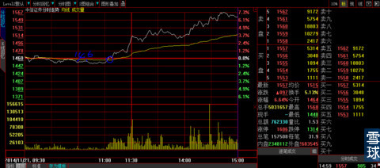
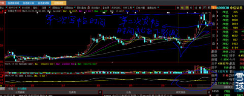
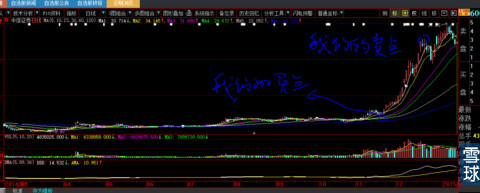

2014年11月16日这一天是星期日，我写了《国务院再度开会研究降低企业融资成本，注册制应该是议题之一》的帖子，启发粉丝寻找股票，我起头发言利好那些板块：块券商板块、券商影子股......。
下图是我当时发帖时间的截图，现在大家还可以去看。当时只有200多个粉丝，看看下面的跟帖，从那时起到今天2015年1月27日总共才26人跟帖，其中还是同一个人反复跟帖。

第二周，券商股连续下跌4天，我终于等来了进场机会，这一天是中信证券2014年11月20日收盘图，见下图。

下图是2014年11月20日“中信证券”三年全景图，面对这样的历史性大双头，无论你是老手还是新人，无论你是技术精湛的骨灰级市场常客还是菜鸟，大家作为一个正常人摸着良心说：无论从技术、经验、心理压力，谁敢于这个时候入场？所以我经常说，在关键时刻一个人的综合学识、见识、对技术深入骨髓的融会贯通才能成长为一个真正的战士。不是随随便便一个人就可以纵横股市江湖，如果是那样，这个世界早就没有穷人了，每一个人都想在股市砍人从来不会把自己当做会被砍的哪一个。

2014年11月21日上午11:10时，我似乎已经听到历史性一刻的清晰脚步声，在中信证券上攻上日收盘价的那一刻，打完全部子弹，立刻关闭大智慧软件，让自己像鸵鸟把头埋在沙堆里一样自欺欺人的掩饰无比的压力与恐惧。见下图。
少许平复心态，我马上在雪球网写出《券商板块行情其实才刚刚开始》的帖子，大声向我200不到的粉丝们呐喊：散户不要被券商股前期的涨幅所吓倒，板块的行情其实才刚刚开始。见下图，这个贴子也是直到今天也才有26个回复，其中还包括我一大半的回复问题咨询。

2014年11月21日下午，对于我来讲，是比1个月还长的2个小时，终于等到股市收盘，中信证券大涨6.64%收盘。我忐忑不安的心也随之安宁。静静的等待下周命运的进一步安排。
大家再次看看这一天的分时图（见下图），是不是上午那么恐怖的下跌被下午上涨后的电脑框压缩的几乎可以忽略不计？

下图是2014年11月21日星期五600030中信证券收盘后的日K线图，我就买在那天大阳线的下影线里面，然后写出《券商板块行情其实才刚刚开始》。

整整1个月以后的2014年12月19日，我们卖在了32.5元位置。见下图。
然后我在它假突破的过程中，写出《人多的地方不要再去》的帖子，也没有参与后来假突破最后的狂欢。
再后来，到我这里对我《人多的地方不要再去》帖子询问、质疑、冒犯我的人越来越多，粉丝也上涨到2000人左右，我一生气就把它删掉了。心里说：人要死拦也拦不住，让他去吧，反正都是命！

今天回顾上次战斗过程，绝对不是你们的“心大”要炫耀、要显摆自己多么有能耐。错，我早就自知之明超越了需要向任何人证明自己的阶段，非常客观的评价自己：拔剑四顾心茫然......。
我相信我的粉丝一定看懂我要说什么、我想说什么！对不对？
路漫修远@炒的是心:心大，如果中信是按突破上日收盘价14.6来决定买入，为什么不在2014年11月21日9点40第一次突破时出手？
炒的是心@路漫修远: 中信证券11月20日收盘价是14.6元，21日周五开盘就开始下杀，万一以推动型小五浪向下，就会大型态破位，我不能确认啊！万一是向下突破，我不就死翘翘了？只有看到连续堆量上攻上日收盘价翻红，再仔细辨认同板块的联动效应，券商板块总市值是巨大的，敢如同玩小盘股一样动这个板块的资金，你想想来头有多大？一旦确认，我就敢把全副身家押上去。常言道“见小利而忘命，见大利而惜身”，我怎么可能把自己混同成“普通老百姓”？风险永远放在第一位，它毕竟是在3年的大双头顶上，央行关于降低利率的政策是11月24日才公布，我买入是11月21日，我又不是央行行长，我怎么可能提前知道？我能从股市局部的骚动提前3天嗅出刚刚出现的一点点苗头已经是走大运了好吧！
king@炒的是心:
这几天晚上都在看老哥的帖子，获益良多。我原本从来不相信技术分析的，所以初次看到你的帖子，也是不屑一顾。但是后来越看越服气，有实证，而且都是在启动之前而不是事后诸葛亮，有基本面分析，而且鞭辟入里，有通过图形揣摩其它市场参与者意图，而且八九不离十。有通过其他公告新闻信息能够敏感捕捉到企业动向。我确实觉得学到了东西，好像打开了一扇大门，说实在的，现在依然认为凡是喜欢搞技术分析的“什么多头排列什么跳空缺口”，一百个有99个是骗子还有一个是傻子，图形是完全可以做出来的，散户想看什么都可以做出来。但是我感觉你之所以不同，原因在于技术分析在你手上是只是辅助工具，有时候甚至只是个幌子，就是下手之前用一下，而且用得极为小心，就是一两个小定式，都是到了其他市场参与者箭在弦上不得不发时用出来，实在是得搭顺风车投机之精髓，金庸的小说《连城诀》里面有个人外号叫铁锁横江，我觉得送给你很贴切，当然我说的是褒义，让前期进驻的大资金不上不下比较难受。
说实话，我觉得我学不到你那么多本事，一点点就行了。缺乏你那么多年的实业经验，对上市公司的各种鬼名堂也不如你清楚，对人性的了解也不如你深刻，但还是感谢，因为我本来做股票基本上就是赚钱的，都是通过老老实实坚守基本面特别好的股票，以及适当的时候在不同大类资产之间切换，收益十来年下来也算不错。学到了你的精髓一招两招，起码在进场的时机选择上，自我感觉会有一个飞跃。
我前几天有点怀疑，你说的这么准，是不是就是做这几只股票的主力的代表啊？观察好几天，才排除这个怀疑。你的形象太丰满了，完全是性情中人，没有哪个骗子会动不动引用金瓶梅这么有情趣的小说，我最喜欢看的小说就是水浒传和金瓶梅，人情世故直达巅峰。也没有哪个骗子会直白的骂人滚，骗子总是和蔼可亲的。更没有哪个骗子会谈自己的子女教育问题。
老哥的粉丝越来越多，我就提醒一句，升米恩斗米仇，跟着你赚钱未必谢你，一不小心亏了钱就骂你的小人很多。别看现在有些人把你捧到天上去。但你久历江湖应该完全清楚，虽然我不知道你为什么要到雪球来玩，钱你是不缺的，大概是想尝试一下江湖上快意恩仇的老大滋味，反正希望老哥玩得高兴就好。最后说句，谢谢！
炒的是心@king：
你最后对我说“虽然我不知道你为什么要到雪球来玩，钱你是不缺的，大概是想尝试一下江湖上快意恩仇的老大滋味”，你简直就是个算命的。
老话说：贼三天不打自招，我17年来一个人在小屋子里研究的上市公司基本面分析、股价与均线与成交量微妙变化技术分析、揣摩市场心理、观测场外宏观资金进出的性质、苗头、时间、速度、持久性还是多少有一点点心得。时间久了，就像小孩跟人显摆会唱歌一样好玩而已。结果围观的人一下子多起来就始料不及了。
抽身退出吧？又有前人进入我评论的个股，想等他们出局后再走，又有新人进入后期我评价过的新股，如此循环就是玩到现在的自然而然的原因。就像要斩断一个切口，这个切口老是不整齐鲜明，过程与理由就这么简单。
 |
假设今天是2014年11月21日上午，你会买“中信证券”吗？炒的是心 2015-01-27 19:42:06 |
Copyright © 1996-2014 SINA Corporation All Rights Reserved.